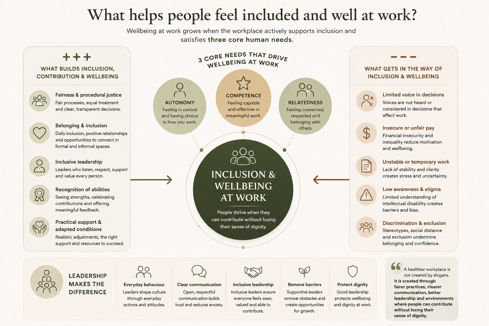
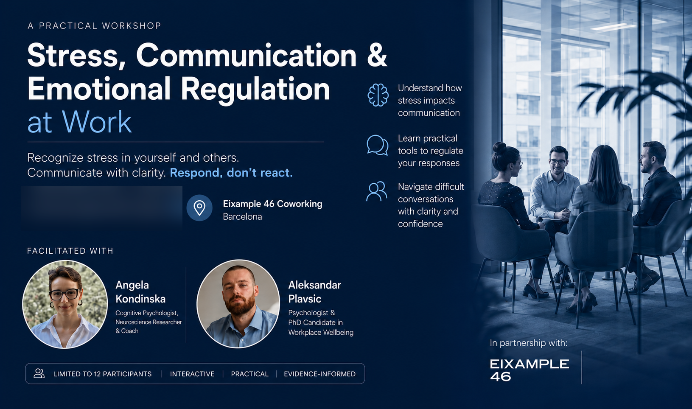

What gets in the way of inclusion at work?
A future article on the family, social, and workplace factors that shape access to meaningful work and genuine inclusion.
Blog
Articles, public work, collaboration resources, and reflections on pressure, burnout, emotional wellbeing, and healthier organizations.

A reflection on burnout, HR pressure, Occupational Health collaboration and sustainable performance in modern organizations.
Read article ↗Research overview
Based on a co-authored Social Sciences article on organizational context, inclusion, basic psychological needs, and wellbeing at work.
Read article ↗A future article on the family, social, and workplace factors that shape access to meaningful work and genuine inclusion.

Published in Intellectual and Developmental Disabilities. A plain-language overview of how inclusive leadership can strengthen autonomy and improve coworkers’ attitudes toward hiring workers with intellectual disability.
Read article ↗Public work
Selected discussions, interviews, and initiatives connected to workplace wellbeing, burnout prevention, psychological support, and public mental health.
View public work ↗Recent workshop
A practical interactive workshop delivered with Angela Kondinska at Eixample 46 Coworking in Barcelona, focused on stress recognition, emotional regulation and communication under pressure.
View workshop ↗